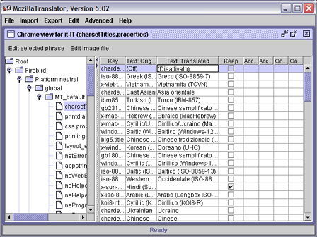
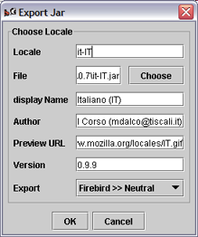

How to localize Mozilla Firefox
MLP
[Localization Project home]
| [Localization docs]
| [Firefox howto]
The English original localizable strings are in the files en-US.jar, US.jar, en-win.jar, en-mac.jar, en-unix.jar. You can find these files in the chrome/ directory of your Firefox installation. You can also translate the default bookmarks in the defaults/profile/ directory.
Once you have the files localized you'll need to:to create an installable langpack (xpi)
or a localized full build of Firefox.
Translate the interface from scratch
Start Mozilla Translator. From menu File select Manage Products. In the new dialog, choose Add and complete the form with the required data:
- Name: the name of the product (in this case Firefox);
- Platform neutral jar file: you need to select the original en-US.jar file, in the chrome directory of your Firefox installation (or anywhere else you put the jar file);
- Platform specific: you must create three platforms with the
Add button:
- Use the names: Win, Mac and Unix.
- These corresponds respectively to the jar files: en-win.jar, en-mac.jar and en-unix.jar, placed in chrome directory.
- The Type is respectively Windows, Mac and Unix.
- Regional jar file: select the original US.jar file, in the chrome directory.
- Custom files: nothing.
In the new window you should choose a file in the left bar, so you can start to translate the related strings (in the Text: Translated column):
If you wish to mantain the original text you can check the Keep original checkbox.

Import an available Mozilla Suite localization
- Put the Mozilla Application Suite glossary.zip file in the same directory as a plain installation of Mozilla Translator.
- Start Mozilla Translator and choose Manage Products from File menu.
- Create a new product called Firefox (following the instructions at step 1 of Steps to translate the interface from scratch section).
- Click Exit, and choose Advanced → Migrate product. In the next dialog, in the source box choose the name of Mozilla Suite translation, in the destination box Firefox, and fill the locale field with the locale code that you are translating to (e.g. it-IT). Click OK.
- Now you can delete the old Mozilla Suite translation from File → Manage products, selecting the Mozilla Suite product, and clicking Remove.
- To translate the untraslated strings preceed with the step 2 of the previous section. Also you can try the Edit → Untranslated strings option.
How to export in translated jar files
-

From menu Export, select Jar file.
- In the next dialog fill all the fields in appropriate way:
- Locale: fill with the locale you're exporting to (e.g. it-IT)
- File: choose the location and the name of the jar that you are exporting.
- For platform neutral content use it-IT.jar (your locale, like fr-FR.jar, zh-CN.jar etc.).
- For specific platform content use it-win.jar, it-mac.jar, it-unix.jar, respectively for Windows, Mac and Unix platforms. The lower case letters before the hyphen "-" indicate the language (it for the Italian language locale).
- For regional content use IT.jar (or FR.jar, CN.jar, etc.)
- Put all the files in an empty directory.
- Fill the display name field with the name Firefox should display when you choose the language (in the Country settings of Profile manager).
- Preview URL is optional.
- Version: you should fill this field with the version of Mozilla backend version in Firefox (for 0.8 is 1.5). Due to a bug, only specifying this field the .jar created will not work with Firefox. You must modify the content of the jar file by hand (see point 4 below).
- In the Export selection box you must choose the appropriate content to export, matching the above file name. Take care on this option!
- Click OK.
Repeat step 2 five times, to export each jar file.
- Now you need to correct the version number of each content.rdf
file in each subcomponent directory included in the jar files. To do this,
repeat for any of the jar files these steps:
- Unzip one original English jar files (changing the file extesion to .zip or directly opening the file with a zip compatible utility) and its localized version in two different folders.
- Within the folder containing the English files, you'll find a contents.rdf file inside each locale/en-US/ subfolder. Open them with a conventional text editor (e.g. for en-US.jar, you'll need to edit locale/en-US/autoconfig/contents.rdf, locale/en-US/browser/contents.rdf, locale/en-US/communicator/contents.rdf, and so on.. ).
- Do the same with the extracted contents.rdf files from the localized jar file (e.g. locale/it-IT/autoconfig/contents.rdf).
- Now look at this code in the original contents.rdf:
<RDF:Description about="urn:mozilla:locale:en-US:autoconfig" chrome:localeVersion="1.5"/>
you must report the version number in this statement in the matching code of localized contents.rdf. Take care because the version number appears two times in two different statements of the Mozilla Translator generated contents.rdf file: you'll need to change them both. - Repeat these steps for each contents.rdf of each subcomponent directory (e.g. for Firefox 0.8 en-US.jar file you'll find 12 subcomponent dirs with 12 contents.rdf files. Each file might have a different version!).
- Finally zip the locale folder of your modified localized jar's directory. The jar file must contain only relative paths: if you include the absolute path the file will not work (take English ones as reference).
How to make an installable langpack (xpi)
Thanks to Torisugari for explaining this procedure to me. You cannot use the built-in function of Mozilla Translator because it is specific for Mozilla Suite.
- In an empty directory create two new directory:
- bin/
- sp/
The directory bin must contain a chrome directory with the exported langpack jars inside. For Italian locale:
- bin/chrome/
- it-IT.jar
- IT.jar
- it-win.jar
- it-mac.jar
- it-unix.jar
The bin/ directory can also contain a subdirectory with customized regional profile template files. You can find these files in the defaults/profile/US/ folder of your Firefox installation. bookmarks.html contains the default bookmarks of Firefox. You should create a directory with the new regional code name, which containing the regional customized settings. For the Italy region locale:
- bin/defauls/profile/IT/
- bookmarks.html
- localstore.rdf
- mimeTypes.rdf
- panels.rdf
- search.rdf
-
- chrome/
- userChrome-example.css
- userContent-example.css
The directory sp/ can hold localized search plugins. For example, in the Italian langpack:
- sp/
- demauro.src
- demauro.gif
- garzanti.src
- garzanti.gif
In the root directory put the install.js installation script. To properly configure this file:
- at lines 89-91 you need to insert your locale and regional code;
- at line 189 you need to adjust the message with your locale.
LOCALIZATION NOTEcomments.At the end you should have this directory tree:
? install.js ? +---bin/ ? +---chrome/ ? ? it-IT.jar ? ? it-mac.jar ? ? it-unix.jar ? ? it-win.jar ? ? IT.jar ? ? ? +---defaults/ ? +---profile/ ? +---IT/ ? ? bookmarks.html ? ? localstore.rdf ? ? mimeTypes.rdf ? ? panels.rdf ? ? search.rdf ? ? ? +---chrome/ ? userChrome-example.css ? userContent-example.css ? +---sp/ demauro.gif demauro.src garzanti.gif garzanti.src- Now you have to create a zip file that contains all these directories and
files, without the absolute path (just what shown above). In Linux, or Windows
with Cygwin, move inside the install.js folder, and use the zip utility
with command:
zip -r9 ../firefox-0.8-it-IT-langpack.xpi *
In Windows you can also use a free visual utility like ZipGenius. Double check the contents of the archive just create, to confirm the install.js lays in the root (its path is an empty string or / ). Make sure the archive extension is .xpi. If not, rename it. The package is now ready to be tested.
- To show Firefox in your language, open it with File | Open file (Ctrl+O),
confirm the installation (Install now), then restart the browser at the
command line with:
firefox -UILocale it-IT -contentLocale IT
(change the option values with your locale codes).
How to make a localized Firefox build
- Create an installable localization package, as described in the section How to make an installable langpack (xpi).
- Install the package in a clean Firefox installation (it means "only unzipped from its original ditribution archive").
- Start Firefox with -UILocale it-IT -contentLocale IT command line options (replacing it-IT and IT with your locale).
- Close Firefox and edit the file installedchrome.txt
in the chrome directory. Delete the lines containing references
to the English "en-US" jar resource files (en-US.jar, US.jar,
en-mac.jar, en-win.jar, en-unix.jar).
DO NOT remove the lines referring to en-US locale but not to en-US jar files.
For example, don't remove the line:
locale,install,url,jar:resource:/chrome/embed-sample.jar!/locale/en-US/embed/ - Now you can delete the English resources jar files (en-US.jar, US.jar, en-mac.jar, en-win.jar, en-unix.jar), and the US/ profile directory in defaults/profile/ .
- Pack all Firefox files in a new zip file and your build is ready to be distributed.
- As a second choice, you can create an installer package using the NSIS installer.